library(knitr)We will look at:
library(C50)
data(churn)
str(churnTrain)## 'data.frame': 3333 obs. of 20 variables:
## $ state : Factor w/ 51 levels "AK","AL","AR",..: 17 36 32 36 37 2 20 25 19 50 ...
## $ account_length : int 128 107 137 84 75 118 121 147 117 141 ...
## $ area_code : Factor w/ 3 levels "area_code_408",..: 2 2 2 1 2 3 3 2 1 2 ...
## $ international_plan : Factor w/ 2 levels "no","yes": 1 1 1 2 2 2 1 2 1 2 ...
## $ voice_mail_plan : Factor w/ 2 levels "no","yes": 2 2 1 1 1 1 2 1 1 2 ...
## $ number_vmail_messages : int 25 26 0 0 0 0 24 0 0 37 ...
## $ total_day_minutes : num 265 162 243 299 167 ...
## $ total_day_calls : int 110 123 114 71 113 98 88 79 97 84 ...
## $ total_day_charge : num 45.1 27.5 41.4 50.9 28.3 ...
## $ total_eve_minutes : num 197.4 195.5 121.2 61.9 148.3 ...
## $ total_eve_calls : int 99 103 110 88 122 101 108 94 80 111 ...
## $ total_eve_charge : num 16.78 16.62 10.3 5.26 12.61 ...
## $ total_night_minutes : num 245 254 163 197 187 ...
## $ total_night_calls : int 91 103 104 89 121 118 118 96 90 97 ...
## $ total_night_charge : num 11.01 11.45 7.32 8.86 8.41 ...
## $ total_intl_minutes : num 10 13.7 12.2 6.6 10.1 6.3 7.5 7.1 8.7 11.2 ...
## $ total_intl_calls : int 3 3 5 7 3 6 7 6 4 5 ...
## $ total_intl_charge : num 2.7 3.7 3.29 1.78 2.73 1.7 2.03 1.92 2.35 3.02 ...
## $ number_customer_service_calls: int 1 1 0 2 3 0 3 0 1 0 ...
## $ churn : Factor w/ 2 levels "yes","no": 2 2 2 2 2 2 2 2 2 2 ...# Remove certain variables that we are not going to use
churnTrain = churnTrain[,! names(churnTrain) %in% c("state"
, "area_code"
, "account_length") ]
set.seed(2)
ind = sample(2, nrow(churnTrain), replace = TRUE, prob=c(0.7,0.3))
trainset = churnTrain[ind == 1,]
testset = churnTrain[ind == 2,]
dim(trainset)## [1] 2315 17dim(testset)## [1] 1018 17split.data = function(data, p = 0.7, s = 666){
set.seed(s)
index = sample(1:dim(data)[1])
train = data[index[1:floor(dim(data)[1] * p)], ]
test = data[index[((ceiling(dim(data)[1] * p)) + 1):dim(data)[1]], ]
return(list(train = train, test = test))
}library(rpart)
library(FSelector)
weights = random.forest.importance(churn~., trainset,importance.type = 1)
print(weights)## attr_importance
## international_plan 101.488897
## voice_mail_plan 26.806457
## number_vmail_messages 32.548730
## total_day_minutes 54.977767
## total_day_calls -1.167211
## total_day_charge 52.027720
## total_eve_minutes 33.423537
## total_eve_calls -3.658911
## total_eve_charge 33.461508
## total_night_minutes 23.415211
## total_night_calls 1.965830
## total_night_charge 23.584998
## total_intl_minutes 33.821813
## total_intl_calls 52.082492
## total_intl_charge 34.139458
## number_customer_service_calls 119.576718# Obtain the attributes of the top 5 weights
subset = cutoff.k(weights, 5)
f = as.simple.formula(subset, "Class")
print(f)## Class ~ number_customer_service_calls + international_plan +
## total_day_minutes + total_intl_calls + total_day_charge
## <environment: 0x000000001f8d3cc0># Function to evaluate and select the feature subsets (with cross validation)
evaluator = function(subset) {
k = 5
set.seed(2)
ind = sample(5, nrow(trainset), replace = TRUE)
results = sapply(1:k, function(i) {
train = trainset[ind ==i,]
test = trainset[ind !=i,]
tree = rpart(as.simple.formula(subset, "churn"), trainset)
error.rate = sum(test$churn != predict(tree, test,
type="class")) / nrow(test)
return(1 - error.rate)
})
return(mean(results))
}
# find optimum feature subset with the originial subset
attr.subset = hill.climbing.search(names(trainset)
[!names(trainset) %in% "churn"], evaluator)
f = as.simple.formula(attr.subset, "churn")
print(f)## churn ~ international_plan + number_vmail_messages + total_day_minutes +
## total_eve_minutes + total_eve_calls + total_eve_charge +
## total_night_minutes + total_night_calls + total_intl_calls +
## total_intl_charge + number_customer_service_calls
## <environment: 0x000000004f7e33b8>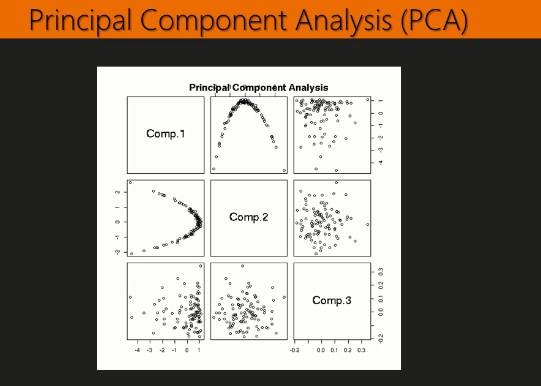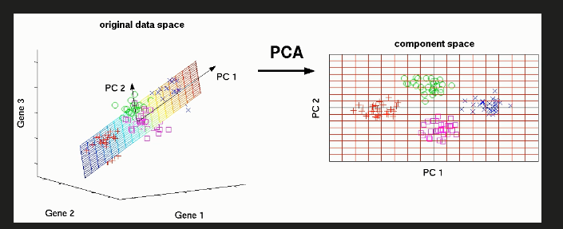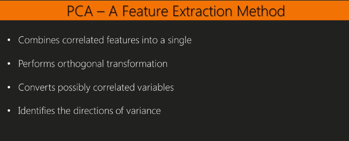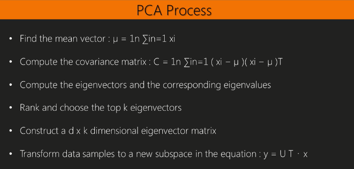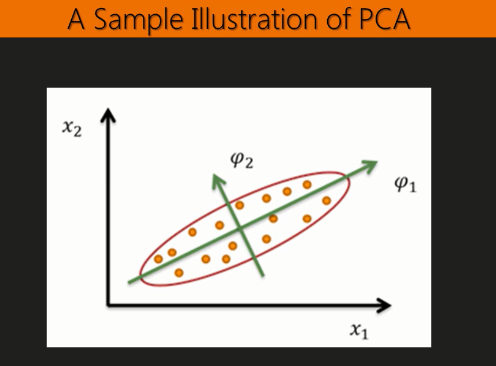
data(swiss)
swiss = swiss[,-1]
swiss.pca = prcomp(swiss,
center = TRUE,
scale = TRUE)
swiss.pca## Standard deviations (1, .., p=5):
## [1] 1.6228065 1.0354873 0.9033447 0.5592765 0.4067472
##
## Rotation (n x k) = (5 x 5):
## PC1 PC2 PC3 PC4 PC5
## Agriculture 0.52396452 -0.25834215 0.003003672 -0.8090741 0.06411415
## Examination -0.57185792 -0.01145981 -0.039840522 -0.4224580 -0.70198942
## Education -0.49150243 0.19028476 0.539337412 -0.3321615 0.56656945
## Catholic 0.38530580 0.36956307 0.725888143 0.1007965 -0.42176895
## Infant.Mortality 0.09167606 0.87197641 -0.424976789 -0.2154928 0.06488642summary(swiss.pca)## Importance of components%s:
## PC1 PC2 PC3 PC4 PC5
## Standard deviation 1.6228 1.0355 0.9033 0.55928 0.40675
## Proportion of Variance 0.5267 0.2145 0.1632 0.06256 0.03309
## Cumulative Proportion 0.5267 0.7411 0.9043 0.96691 1.00000predict(swiss.pca, newdata=head(swiss, 1))## PC1 PC2 PC3 PC4 PC5
## Courtelary -0.9390479 0.8047122 -0.8118681 1.000307 0.4618643swiss.princomp = princomp(swiss,
center = TRUE,
scale = TRUE)## Warning: In princomp.default(swiss, center = TRUE, scale = TRUE) :
## extra arguments 'center', 'scale' will be disregardedswiss.princomp## Call:
## princomp(x = swiss, center = TRUE, scale = TRUE)
##
## Standard deviations:
## Comp.1 Comp.2 Comp.3 Comp.4 Comp.5
## 42.896335 21.201887 7.587978 3.687888 2.721105
##
## 5 variables and 47 observations.summary(swiss.princomp)## Importance of components:
## Comp.1 Comp.2 Comp.3 Comp.4 Comp.5
## Standard deviation 42.8963346 21.2018868 7.58797830 3.687888330 2.721104713
## Proportion of Variance 0.7770024 0.1898152 0.02431275 0.005742983 0.003126601
## Cumulative Proportion 0.7770024 0.9668177 0.99113042 0.996873399 1.000000000predict(swiss.princomp, swiss[1,])## Comp.1 Comp.2 Comp.3 Comp.4 Comp.5
## Courtelary -38.95923 -20.40504 12.45808 4.713234 -1.46634library(psych)
library(GPArotation)
swiss.principal = principal(swiss, nfactors=5, rotate="none")
swiss.principal## Principal Components Analysis
## Call: principal(r = swiss, nfactors = 5, rotate = "none")
## Standardized loadings (pattern matrix) based upon correlation matrix
## PC1 PC2 PC3 PC4 PC5 h2 u2 com
## Agriculture -0.85 -0.27 0.00 0.45 -0.03 1 5.6e-16 1.8
## Examination 0.93 -0.01 -0.04 0.24 0.29 1 2.8e-15 1.3
## Education 0.80 0.20 0.49 0.19 -0.23 1 2.2e-15 2.1
## Catholic -0.63 0.38 0.66 -0.06 0.17 1 1.1e-15 2.8
## Infant.Mortality -0.15 0.90 -0.38 0.12 -0.03 1 6.7e-16 1.5
##
## PC1 PC2 PC3 PC4 PC5
## SS loadings 2.63 1.07 0.82 0.31 0.17
## Proportion Var 0.53 0.21 0.16 0.06 0.03
## Cumulative Var 0.53 0.74 0.90 0.97 1.00
## Proportion Explained 0.53 0.21 0.16 0.06 0.03
## Cumulative Proportion 0.53 0.74 0.90 0.97 1.00
##
## Mean item complexity = 1.9
## Test of the hypothesis that 5 components are sufficient.
##
## The root mean square of the residuals (RMSR) is 0
## with the empirical chi square 0 with prob < NA
##
## Fit based upon off diagonal values = 1# LOOKING FOR THE ELBOW!--> happens at 2, we should retain component 1 as it has the steep curve before the elbow
screeplot(swiss.pca, type="line")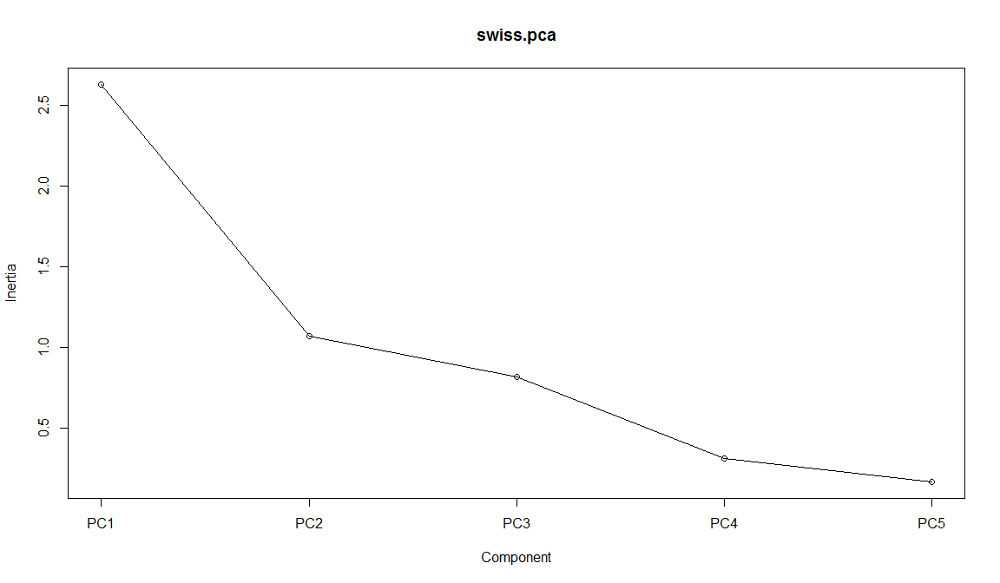
library(nFactors)
ev = eigen(cor(swiss))
ap = parallel(subject=nrow(swiss),var=ncol(swiss),rep=100,cent=.05)
nS = nScree(x=ev$values, aparallel=ap$eigen$qevpea)
plotnScree(nS)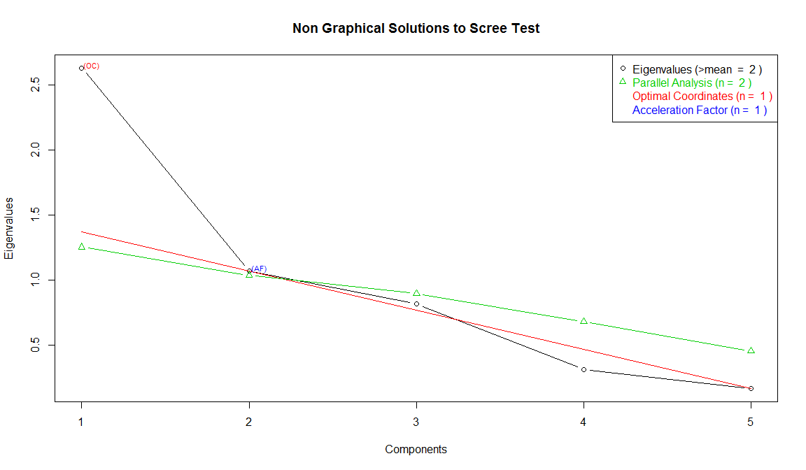
swiss.pca$sdev## [1] 1.6228065 1.0354873 0.9033447 0.5592765 0.4067472swiss.pca$sdev ^ 2## [1] 2.6335008 1.0722340 0.8160316 0.3127902 0.1654433which(swiss.pca$sdev ^ 2> 1)## [1] 1 2screeplot(swiss.pca, type="line")
abline(h=1, col="red", lty= 3)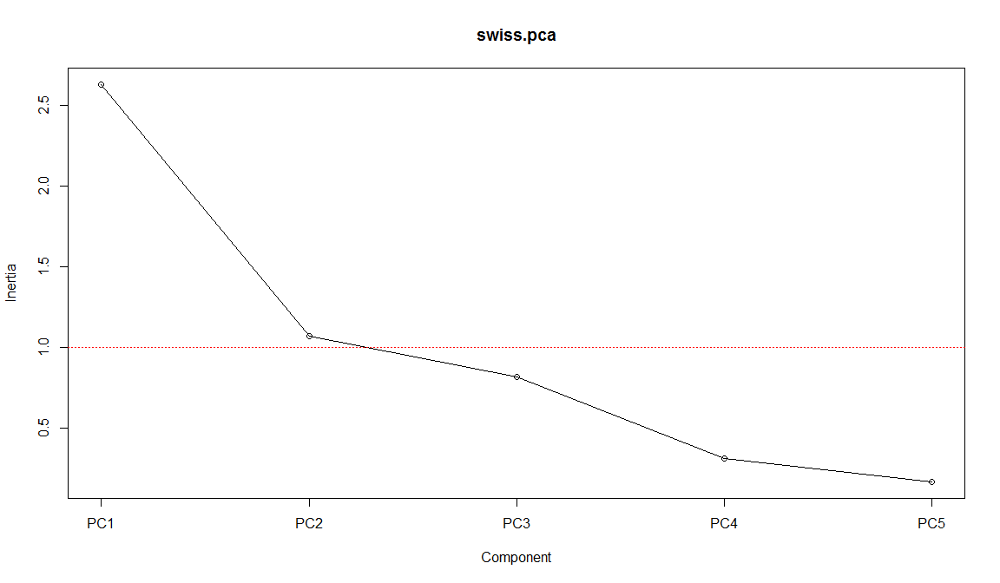
# Using the 2 Principal components, we can plot the data that is associated with it
plot(swiss.pca$x[,1], swiss.pca$x[,2], xlim=c(-4,4))
text(swiss.pca$x[,1], swiss.pca$x[,2], rownames(swiss.pca$x),
cex=0.7, pos=4, col="red")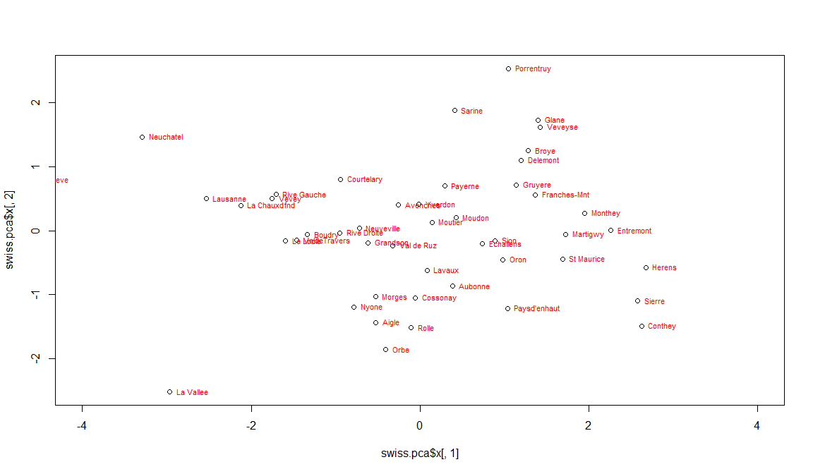
# The biplot then helps us plot on top of the previous plot, the actual variables that were mapped to the principal components, for example, Infant mortality, catholic and agriculture score high in PC2. You can see how "Sanne" is positioned in the 2-D space and how is it related with the underlying factors
biplot(swiss.pca)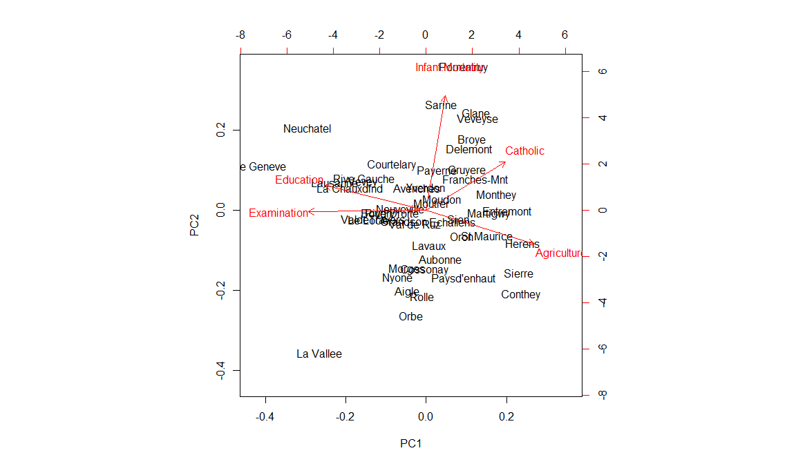
# Doing the same with a ggplot type plot with extra info
library(devtools)
library(ggbiplot)
g = ggbiplot(swiss.pca, obs.scale = 1, var.scale = 1,
ellipse = TRUE,
circle = TRUE)
print(g)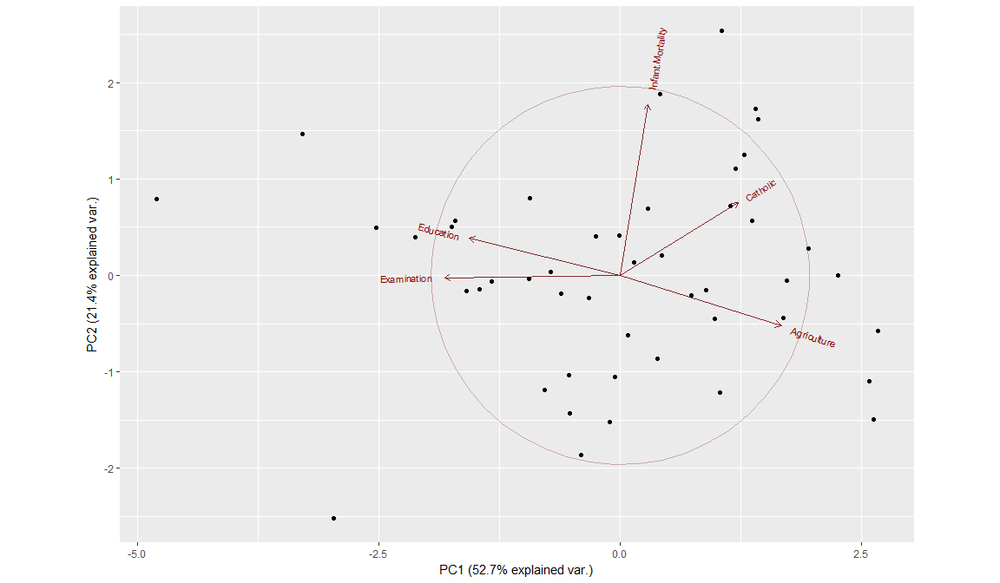
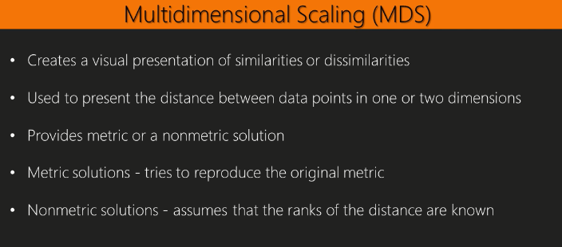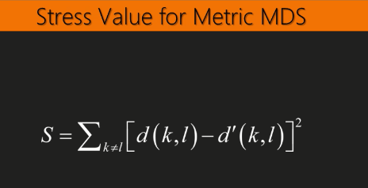
Also known as PCA. First it transforms distances into similarities. It basically tries to linearly project original data points to a subspace by performing PCA on similarities.
swiss.dist = dist(swiss)
swiss.mds = cmdscale(swiss.dist, k=2)
plot(swiss.mds[,1], swiss.mds[,2], type = "n", main = "cmdscale(stats)")
text(swiss.mds[,1], swiss.mds[,2], rownames(swiss), cex = 0.9, xpd = TRUE)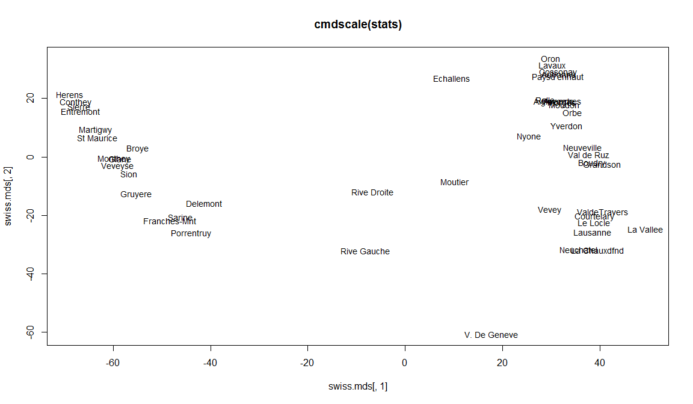
In this case we can also perform a non-linear projection of similarities by minimizing the strees value.
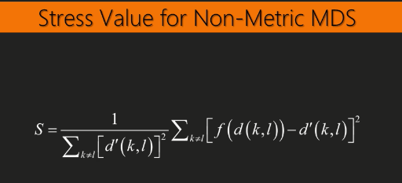
library(MASS)
swiss.nmmds = isoMDS(swiss.dist, k=2)## initial value 2.979731
## iter 5 value 2.431486
## iter 10 value 2.343353
## final value 2.338839
## convergedplot(swiss.nmmds$points, type = "n", main = "isoMDS (MASS)")
text(swiss.nmmds$points, rownames(swiss), cex = 0.9, xpd = TRUE)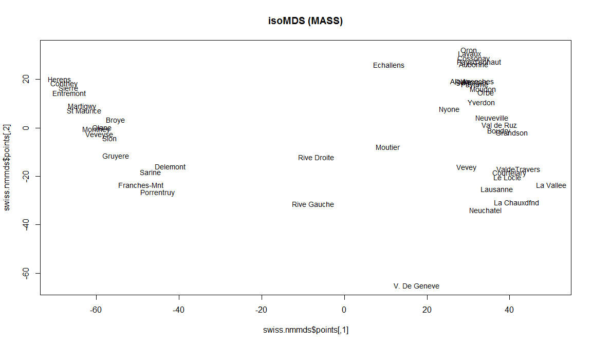
# Shepard plot to show how well do the projected distances match the original matrix distances
swiss.sh = Shepard(swiss.dist, swiss.mds)
plot(swiss.sh, pch = ".")
lines(swiss.sh$x, swiss.sh$yf, type = "S")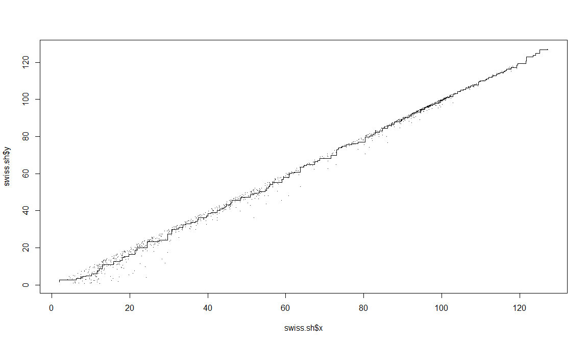
library(igraph)
swiss.sample = swiss[1:10,]
g = graph.full(nrow(swiss.sample))
V(g)$label = rownames(swiss.sample)
layout = layout.mds(g, dist = as.matrix(dist(swiss.sample)))
plot(g, layout = layout, vertex.size = 3)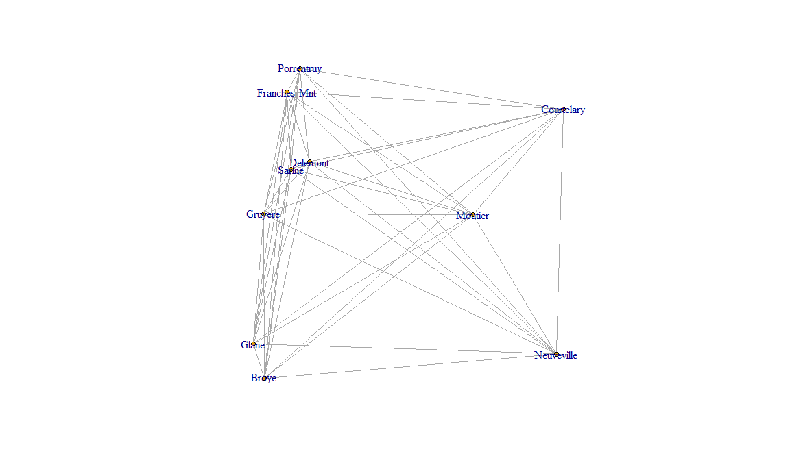
swiss.dist = dist(swiss)
swiss.mds = cmdscale(swiss.dist, k=2)
plot(swiss.mds[,1], swiss.mds[,2], type="n")
text(swiss.mds[,1], swiss.mds[,2], rownames(swiss), cex = 0.9, xpd = TRUE)
swiss.pca = prcomp(swiss)
text(-swiss.pca$x[,1],-swiss.pca$x[,2], rownames(swiss),
col="blue", adj = c(0.2,-0.5),cex = 0.9, xpd = TRUE)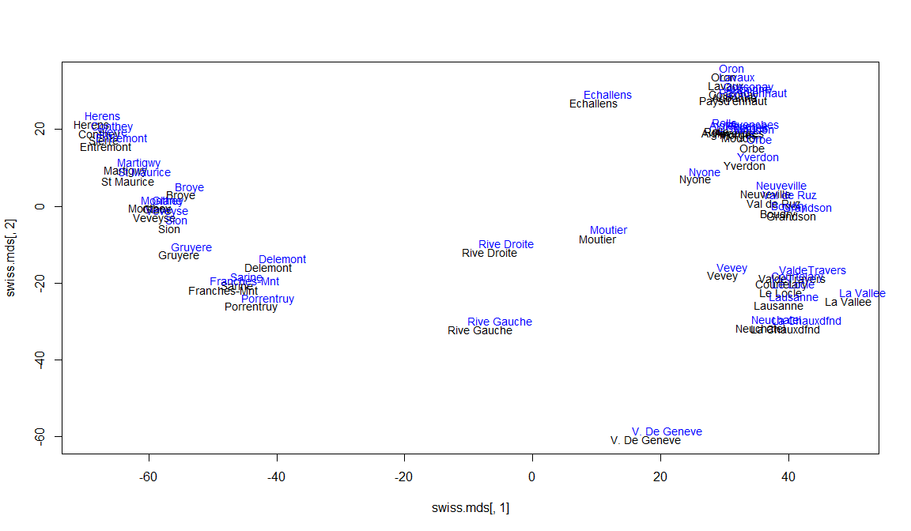
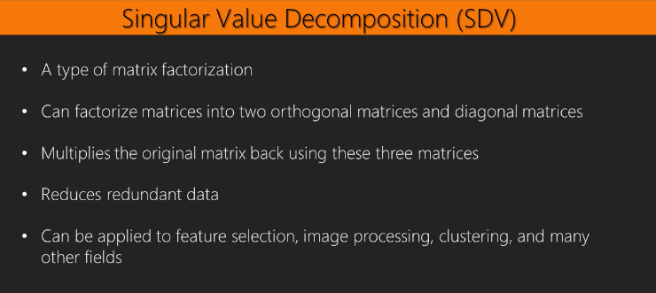
swiss.svd = svd(swiss)
plot(swiss.svd$d^2/sum(swiss.svd$d^2), type="l", xlab=" Singular vector",
ylab = "Variance explained")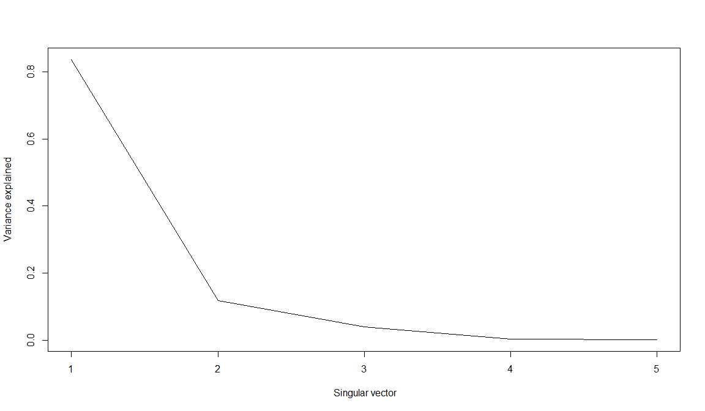
plot(cumsum(swiss.svd$d^2/sum(swiss.svd$d^2)), type="l",
xlab="Singular vector", ylab = "Cumulative percent of variance explained")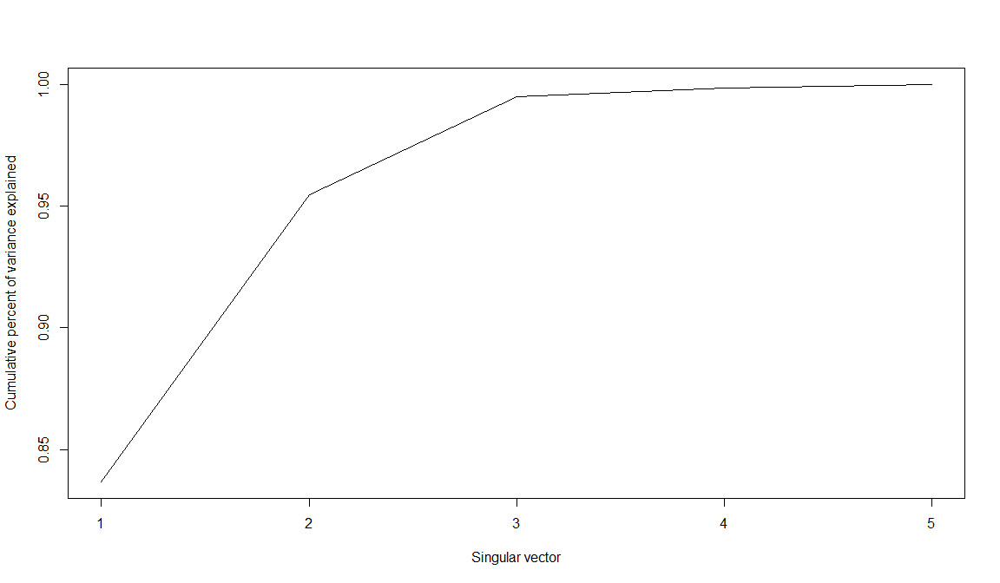
# Reconstruct the data with only 1 singular vector
swiss.recon = swiss.svd$u[,1] %*% diag(swiss.svd$d[1],
length(1), length(1)) %*% t(swiss.svd$v[,1])
# Compare the original with the new reconstructed -> images are very similar to the reconstruction with less dimensions has worked
par(mfrow=c(1,2))
image(as.matrix(swiss), main="swiss data Image")
image(swiss.recon, main="Reconstructed Image")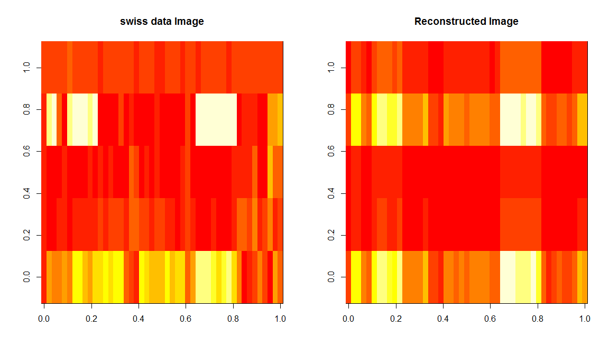
# PCA is equivalent to the V component of SVD. Check the results below.
svd.m = svd(scale(swiss))
svd.m$v## [,1] [,2] [,3] [,4] [,5]
## [1,] 0.52396452 -0.25834215 0.003003672 -0.8090741 0.06411415
## [2,] -0.57185792 -0.01145981 -0.039840522 -0.4224580 -0.70198942
## [3,] -0.49150243 0.19028476 0.539337412 -0.3321615 0.56656945
## [4,] 0.38530580 0.36956307 0.725888143 0.1007965 -0.42176895
## [5,] 0.09167606 0.87197641 -0.424976789 -0.2154928 0.06488642pca.m = prcomp(swiss,scale=TRUE)
pca.m$rotation## PC1 PC2 PC3 PC4 PC5
## Agriculture 0.52396452 -0.25834215 0.003003672 -0.8090741 0.06411415
## Examination -0.57185792 -0.01145981 -0.039840522 -0.4224580 -0.70198942
## Education -0.49150243 0.19028476 0.539337412 -0.3321615 0.56656945
## Catholic 0.38530580 0.36956307 0.725888143 0.1007965 -0.42176895
## Infant.Mortality 0.09167606 0.87197641 -0.424976789 -0.2154928 0.06488642# Read the image
library(bmp)
lenna = read.bmp("lena512.bmp") # --> we read the image as a numeric matrix
lenna = t(lenna)[,nrow(lenna):1]
image(lenna)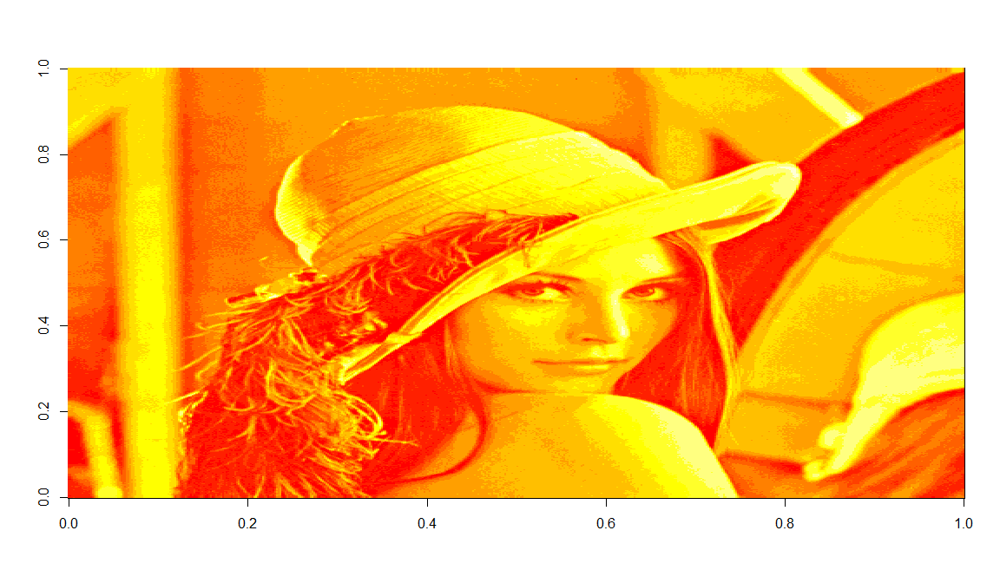
# Perform SVD on image and plot % of variance explained
lenna.svd = svd(scale(lenna))
plot(lenna.svd$d^2/sum(lenna.svd$d^2), type="l", xlab=" Singular vector",
ylab = "Variance explained")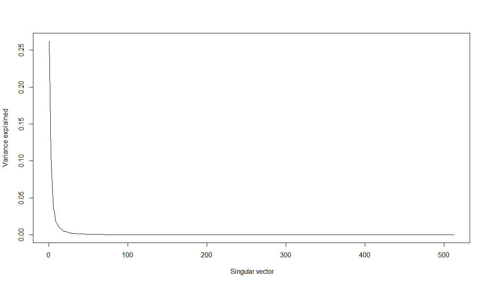
# Obtain the point at which the singular vector can explain more than 90% of the variance
min(which(cumsum(lenna.svd$d^2/sum(lenna.svd$d^2))> 0.9))## [1] 18# Create a function that will reconstruct the image with a certain number of components that the user specifies
lenna_compression = function(dim){
u=as.matrix(lenna.svd$u[, 1:dim])
v=as.matrix(lenna.svd$v[, 1:dim])
d=as.matrix(diag(lenna.svd$d)[1:dim, 1:dim])
image(u%*%d%*%t(v))
}
# Since we discovered above the 18 was the number of components that could explain more than 90% of the variance, lets plot the image
lenna_compression(18)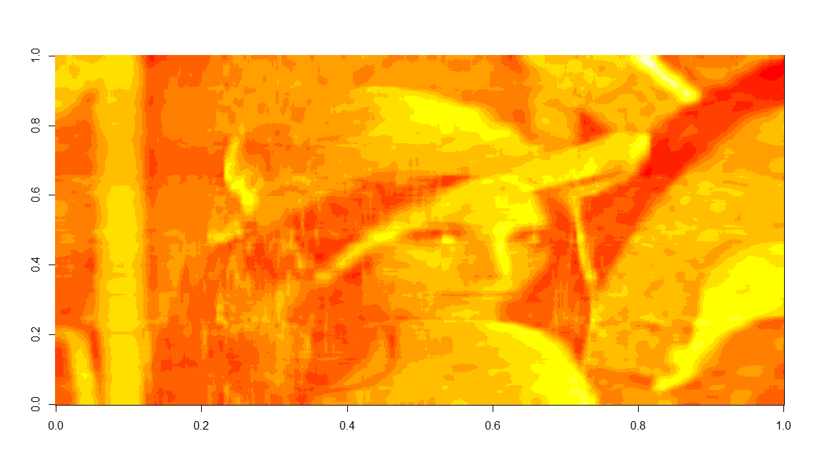
# Do the same but with 99% of the variance
min(which(cumsum(lenna.svd$d^2/sum(lenna.svd$d^2))> 0.99))## [1] 92lenna_compression(92)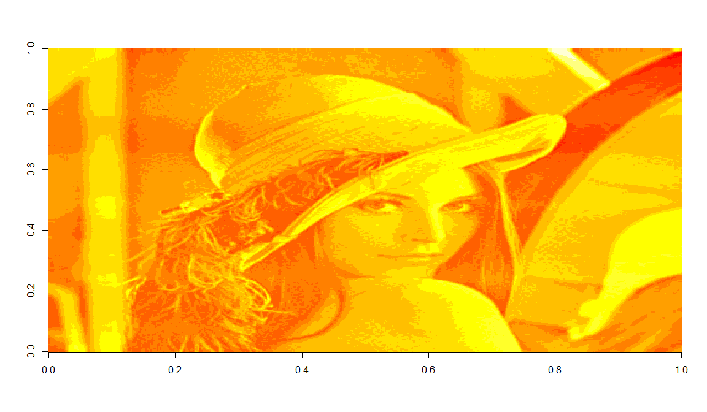
library(RnavGraphImageData)
library(vegan)
# Load data and plot 1 number
data(digits)
sample.digit = matrix(digits[,3000],ncol = 16, byrow=FALSE)
image(t(sample.digit)[,nrow(sample.digit):1])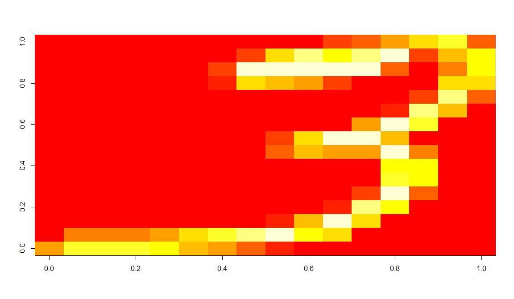
# Randomnly pick 600 digits
set.seed(2)
digit.idx = sample(1:ncol(digits),size = 600)
digit.select = digits[,digit.idx]
# Transpose the numbers and compute the dissimilarity between objects and calculate the distance between objects
digits.Transpose = t(digit.select)
digit.dist = vegdist(digits.Transpose, method="euclidean")
# Perform dimension reduction
digit.isomap = isomap(digit.dist,k = 8, ndim=6, fragmentedOK = TRUE)
plot(digit.isomap)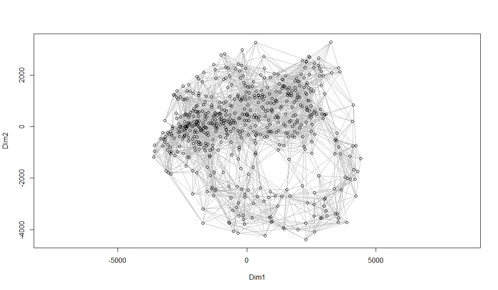
# Overlay the scatter plot with the spantree
digit.st = spantree(digit.dist)
digit.plot = plot(digit.isomap, main="isomap k=8")
lines(digit.st, digit.plot, col="red")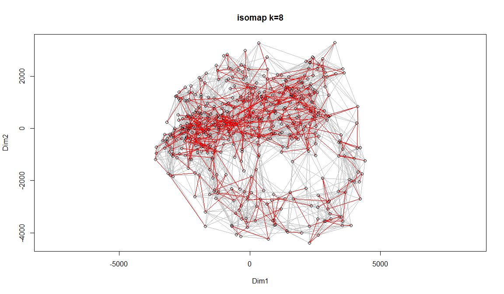
library(lle)
data( lle_scurve_data )
X = lle_scurve_data
results = lle( X=X , m=2, k=12, id=TRUE)## finding neighbours
## calculating weights
## intrinsic dim: mean=2.47875, mode=2
## computing coordinatesstr( results )## List of 4
## $ Y : num [1:800, 1:2] -1.586 -0.415 0.896 0.513 1.477 ...
## $ X : num [1:800, 1:3] 0.955 -0.66 -0.983 0.954 0.958 ...
## $ choise: NULL
## $ id : num [1:800] 3 3 2 3 2 2 2 3 3 3 ...plot( results$Y, main="embedded data", xlab=expression(y[1]),
ylab=expression(y[2]) )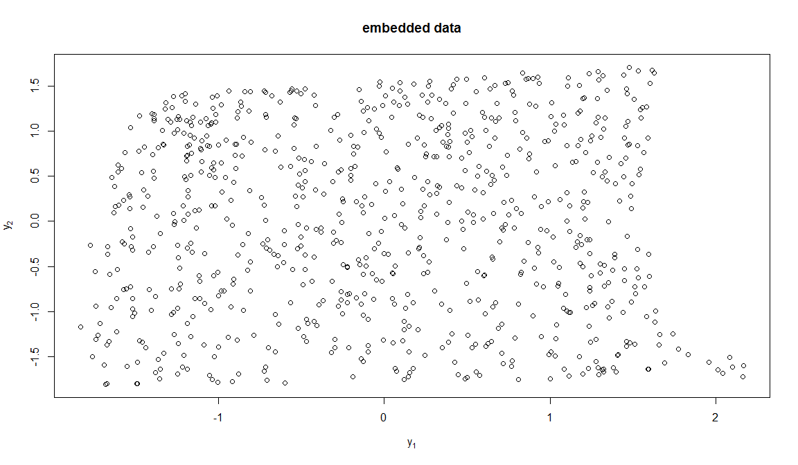
plot_lle( results$Y, X, FALSE, col="red", inter=TRUE )## NULL